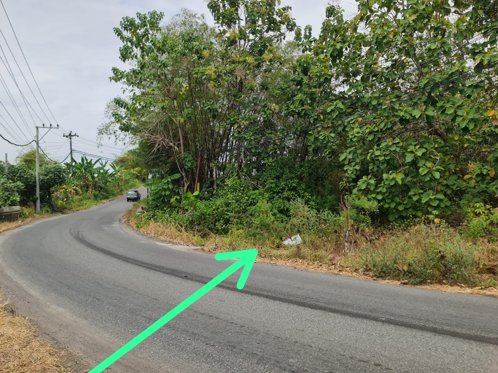
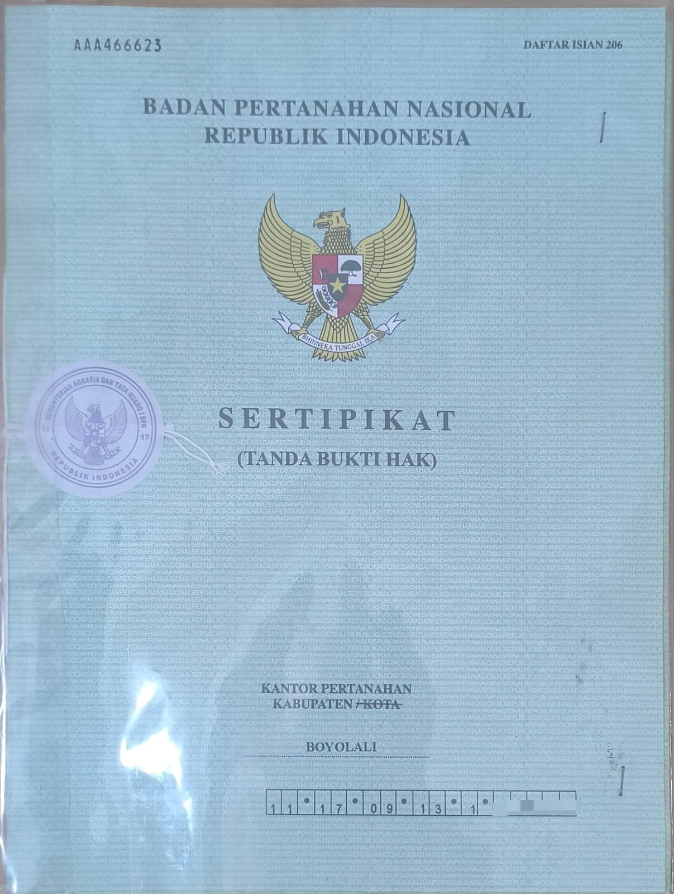
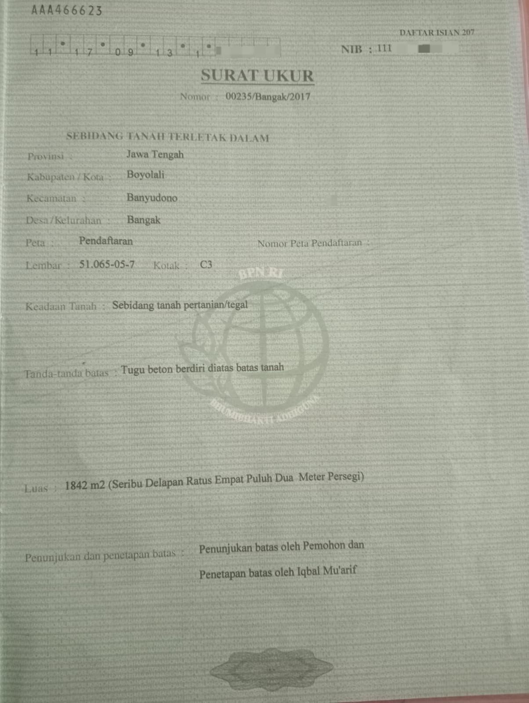

Miliki lahan strategis seluas 1.842 m² yang menghubungkan akses cepat Gerbang Tol Colomadu dengan pusat pertumbuhan Simo. Kesempatan emas mengamankan *capital gain* di jalur utama (Mangku Jalan).

Lahan luas yang sangat memadai untuk berbagai kebutuhan bisnis skala besar maupun hunian eksklusif.
Sangat ideal dan leluasa untuk dibangun gudang transit, kompleks ruko, perkantoran, atau klaster hunian elit.
Memberikan akses masuk kendaraan berat yang lega serta visibilitas etalase yang tinggi dari jalan raya utama.
Sertifikat Hak Milik (SHM) *ready*. Dokumen lengkap, aman, dan siap untuk ditransaksikan di Notaris.
Mangku Jalan Utama Bangak – Simo. Akses super cepat menuju Gerbang Tol Colomadu/Bangak dan jalur Solo-Semarang.
Berada dalam radius strategis RSUD Simo, Puskesmas Sambi, Pasar Rakyat Sambi, dan institusi pendidikan negeri.
Karakteristik tanah yang kokoh untuk pondasi infrastruktur berat sekaligus subur untuk area penghijauan.
Harga Jauh di Bawah Harga Pasar Komersial!
Dengan harga kompetitif hanya Rp1.000.000,- per m², aset ini merupakan instrumen investasi *undervalued*. Anda menghemat secara signifikan dibandingkan harga listing area komersial sekitarnya yang kini telah menyentuh angka Rp1,8 Juta - Rp3,4 Juta/m².
Total Luas: 1.842 m²
Transparansi penuh. Dokumen valid dan dapat dipertanggungjawabkan.


Pantau posisi strategis lahan secara langsung dari udara.
Saya siap bertemu tanpa perantara langsung dengan saya pemilik pribadi tanah ini